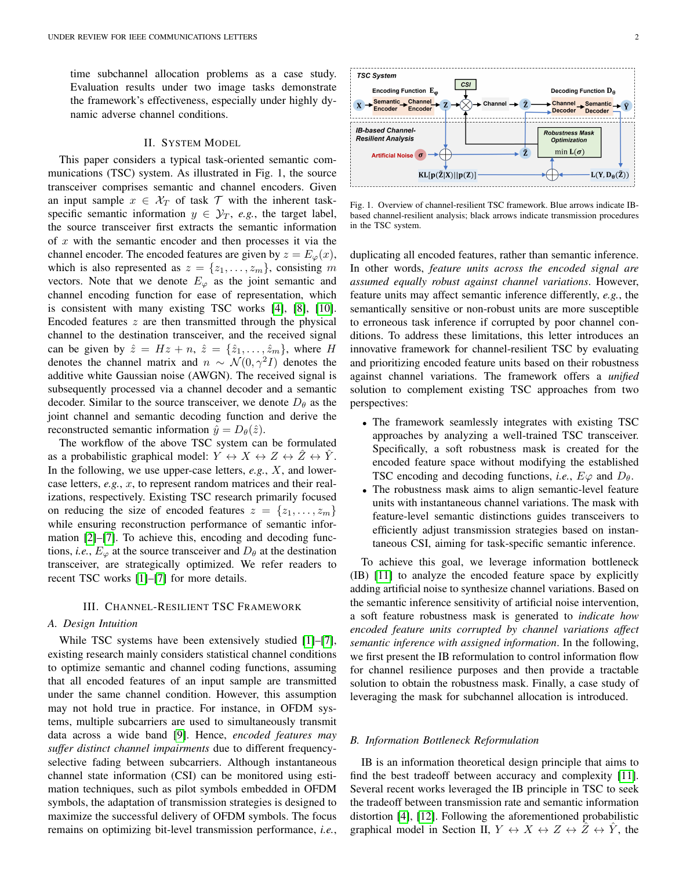

研究专题入口
按技术主题、代表团队和期刊全景三条路径组织语义通信文献。每份报告提供独立导航、逐篇分析、关键图表、横向比较和可追溯的筛选记录。
3 个主题调研1 个期刊全景调研6 支团队路线调研2021—2026
主题调研
按关键技术问题组织
数字语义通信调研
重点关注离散语义变量、VQ/codebook、bit/token 传输开销和信道错误建模。
进入调研结果可控语义通信调研
研究如何依据内容、任务、信道状态和反馈动态调整 latent、码率、保护强度与重传行为。
进入调研结果
信息瓶颈语义通信调研
系统梳理 IB、VIB、DIB、RIB 等目标函数及其变量、计算流程、信道鲁棒性和隐私约束。
进入调研结果期刊全景调研
按出版物与时间范围系统覆盖
IEEE TWC 语义通信论文全景调研
系统梳理 2023 年以来 IEEE Transactions on Wireless Communications 的语义通信、任务导向通信、DeepJSCC 与相关边界工作。
进入期刊全景调研团队路线调研
按国内团队—英国团队排列KN
北京邮电大学牛凯—张平团队
覆盖 NTSCC、同义映射、语义信息理论、数字 VQ/OFDM、多用户接入和生成式传输。
进入团队调研
清华大学秦志金团队
从 DeepSC 文本传输延伸至语音、多模态、任务导向系统、资源分配、安全和大模型生成。
进入团队调研MT
上海交通大学陶梅霞团队
聚焦数字 coding-modulation、共享码本、广播/多用户、bit-level 映射、扩散去噪和 MIMO。
进入团队调研DG
Imperial College London Deniz Gündüz 团队
以 DeepJSCC 为主线，覆盖带宽适应、MIMO/中继、任务通信、生成模型、理论与隐私。
进入团队调研YM
Surrey Yi Ma—Mahdi Boloursaz Mashhadi 团队
研究 foundation/diffusion models 驱动的生成式通信、时延—感知权衡、token 和立体媒体原型。
进入团队调研AN
QMUL Arumugam Nallanathan 与 DeepSC 团队
聚焦 DeepSC、多用户 VQA、鲁棒文本/图像、多任务多模态系统和轻量数字接收机。
进入团队调研